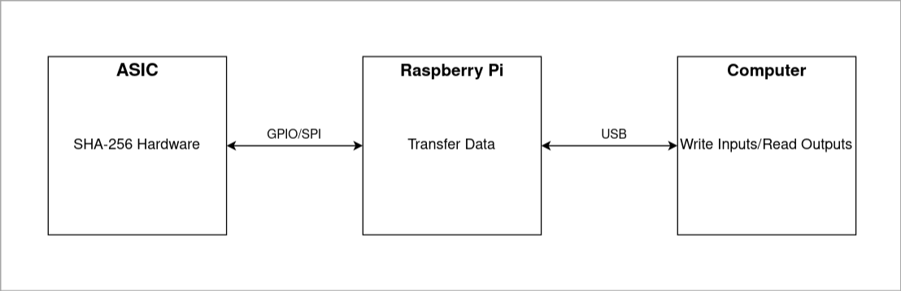

SHA-256 Hash Accelerator ASIC
In progress
A dedicated hardware accelerator for SHA-256 hashing.
Overview
The goal of this project is to design and tape out a hash accelerating ASIC for the SHA-256 algorithm.
Design
Select a yellow block to further investigate the design. Use “Up one level” to return to its parent.
Top module
- Explore module
- Low-level module
- External hardware
Verification
The verification plan checks individual modules first, then their behavior together through a complete hash.
| Level | Block | Key checks |
|---|---|---|
| Unit | Data compression | Initial hash load, round enable and pause, all 64 cycles, asynchronous reset. |
| Unit | Message scheduler | Padded block load, word order and per-cycle schedule against SHA-256, adder output, and load/reset/round priority. |
| Unit | FSM | Control outputs in each state and transitions from idle through load, round, update, and done. |
| Unit | Preprocessing | Reset, buffering and padding for inputs below, at, and above the maximum length; successive inputs. |
| Integration | Scheduler + compression | Block loading, cycle timing and data handoff, reset, block boundaries, and empty or synthetic inputs. |
| Integration | Hash computation | Valid and invalid blocks, round enable and pause, 64-cycle accuracy, and hash updates. |
| System | Accelerator + top | Start, reset during computation, completion and digest validity; constants, input sizes, block timing, and known SHA-256 vectors. |
Emulation
From the start of the semester, we were planning on performing a demo with a RP Pico and a PC, with a simple diagram shown below.

Upon presenting our plan in a design review, one of our reviewers brought up a very interesting and valid question: why were we using the Pico?
Most communication protocols we could feasibly integrate would likely bottleneck our accelerator. We switched from the onboard UART to SPI because UART would've been so slow. But with our Pico interface, we have not only SPI bottlenecking the accelerator, but a second USB interface to our PC also slowing down the transfer of data. This could make our accelerator more of a proof-of-concept design than a finished product.
We didn't want to settle for that, so our next challenge was coming up with a meaningful demonstration that shows our product is a functional and applicable tool. We also wanted it to align with our own interests, most notably computer networks.
Connecting to the accelerator over a network doesn't magically remove the bottlenecks. But with another FPGA, we could design a network interface controller and demonstrate functionality within a typical computer network system.
If our priority was to showcase the maximum throughput the accelerator could provide, we could instead consider a Bitcoin mining demonstration. An 80-byte header provides the starting point for up to 2^32 nonce values, though the demo would need to support nonce variation and Bitcoin's double SHA-256 hashing. Communicating to our accelerator via Ethernet could also reflect the systems set up in Bitcoin mining farms.
Our next step is deciding on a target for our demo, and completing it before the end of the semester.